Assignment 1
Ray Tracing with OptiX
A GPU-accelerated ray tracer built on NVIDIA OptiX. Implements Blinn-Phong shading, recursive mirror reflections, ellipsoidal geometry via object-space transforms, and physically-based light attenuation.
GeometryGroup BVH, both merged under a root Group BVH — three BVHs total. Handles tens of thousands of triangles in the dragon scene efficiently.w=1 for points, w=0 for directions), solved against a unit sphere, normal brought back via (A⁻¹)ᵀ.ka + kd + ks + ke material model. Diffuse via Lambert dot-product. Specular via half-vector H = normalize(L+V). Shadow rays gate both terms per light.1/(c₁ + c₂d + c₃d²), parsed from the attenuation scene command. Directional lights are unattenuated.ks spawn mirror rays via r = d − 2(d·n)n. Depth tracked in payload struct, capped at 5 bounces to prevent infinite recursion.tmax = dist − ε to avoid over-shadowing. Epsilon offset on origin prevents self-intersection.Scene Commands Supported
- size, output, camera
- ambient, diffuse, specular, emission, shininess
- point, directional, attenuation, maxdepth
- maxverts, vertex, tri, sphere
- pushTransform, popTransform
- translate, rotate, scale
Implementation Notes
Normals use the inverse-transpose (n′ = (A⁻¹)ᵀ n) to stay perpendicular under non-uniform scale. Sphere bounding boxes are computed by transforming all 8 object-space AABB corners to world space and taking min/max — giving tight, correct bounds for the BVH. OptiX trace depth is 12; shader caps reflections at 5 bounces.


Assignment 2
Direct Lighting
Extends the ray tracer with physically-based direct illumination from parallelogram (quad) area lights, point lights, and directional lights. Implements a Monte Carlo estimator with both uniform and stratified sampling using the Modified Phong BRDF, plus shadow ray occlusion testing per sample.
New Scene Commands
- integrator <name>
- quadLight a ab ac rgb
- lightsamples <N>
- lightstratify on|off
- point, directional, attenuation
Implementation Notes
Shadow rays stop just short of the light surface to avoid false self-occlusion. Uniform and stratified sampling use independent random seeds per pixel and per light to prevent correlated noise patterns across the image. Final radiance is clamped to the displayable range per channel.
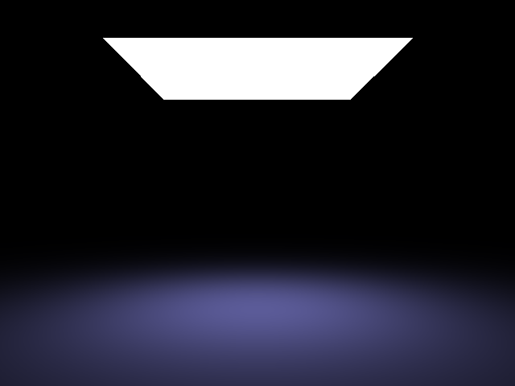
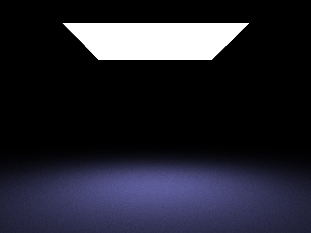
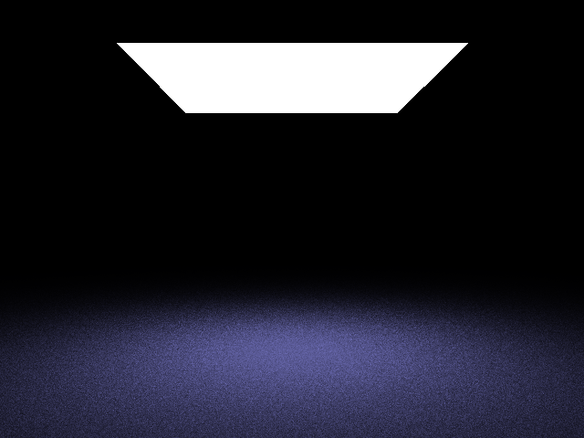
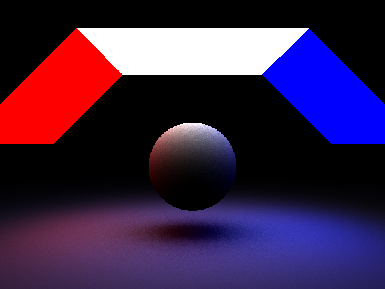
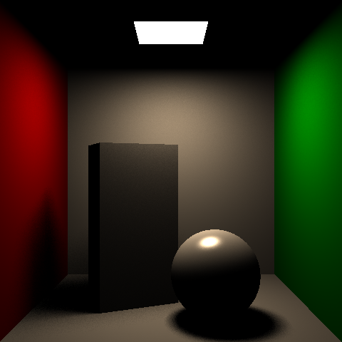
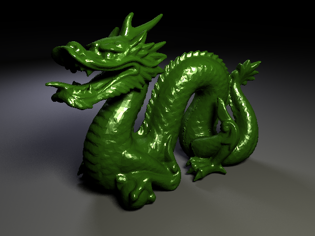
Assignment 3
Path Tracing
Extends the renderer with a full unidirectional path tracer supporting global illumination via recursive Monte Carlo path integration. Implements Next Event Estimation (NEE) for direct light sampling at each bounce, and Russian Roulette (RR) termination for unbiased variance reduction with infinite path depth.
New Scene Commands
- integrator pathtracer
- spp <N>
- maxdepth <D> (or infinity)
- nexteventestimation on|off
- russianroulette on|off
Implementation Notes
With NEE enabled, emitter hits along indirect paths skip their emission contribution to avoid double-counting the direct light already sampled explicitly. Russian Roulette uses the max RGB channel of the current throughput as the survival probability, clamped to avoid division by near-zero weights.
Cosine Importance Sampling
Implemented cosine importance sampling for the indirect bounce direction.
Rather than drawing directions uniformly from the hemisphere (pdf = 1/2π),
samples are drawn proportional to cos θ (pdf = cos θ/π), concentrating
paths near the surface normal where the Lambertian response is strongest.
The cos θ factor in the rendering equation cancels with the pdf, simplifying
the per-bounce weight to π · brdf — lower variance than uniform
sampling for diffuse surfaces at no extra cost per sample.
New Scene Command
- importancesampling cosine
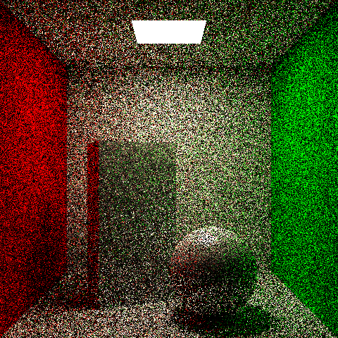
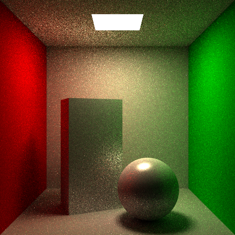
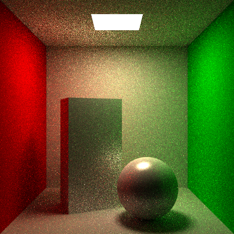
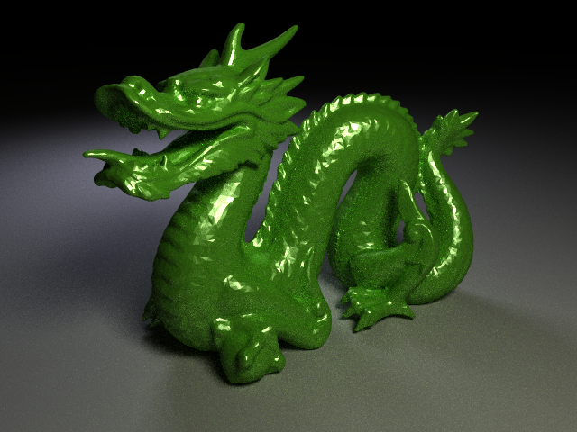
Assignment 4
Multiple Importance Sampling
Extends the path tracer with GGX microfacet BRDFs, BRDF importance sampling for both Phong and GGX, and Multiple Importance Sampling (MIS) combining NEE area sampling and BRDF sampling via the power heuristic — dramatically reducing variance on glossy surfaces illuminated by area lights.
π · brdf and reducing variance on diffuse surfaces at no extra cost per sample.D, Smith masking-shadowing G = G1(wi)·G1(wo) (Schlick approximation), and Schlick Fresnel F. Evaluated as kd/π + F·G·D / (4·cosθᵢ·cosθₒ). Roughness alpha is set per-geometry.t = ksAvg / (kdAvg + ksAvg). Phong specular samples around the mirror direction using a power-cosine distribution; GGX samples a microfacet normal h from the GGX distribution then reflects to get wi. Both use cosine-weighted hemisphere sampling for the diffuse lobe.w = p_a² / (p_a² + p_b²). Each strategy's contribution is scaled by its MIS weight, eliminating the high-variance spikes that appear when either strategy is used alone on glossy surfaces.anyHit. An additional analytical intersection check tests every shadow ray against all other quad lights, ensuring inter-light shadowing is correctly accounted for.brdfType (Phong or GGX) and importanceSampling mode (hemisphere, cosine, brdf) are stored per-geometry and forwarded through the payload. The same closest-hit shader handles all combinations via branching, with no separate integrators needed.New Scene Commands
- brdf phong|ggx
- roughness <alpha>
- importancesampling cosine|brdf
- gamma <value>
Implementation Notes
The GGX specular mixture probability is floored at 0.25 so that
at least 25% of samples always probe the specular lobe, preventing
degenerate pdfs on near-diffuse surfaces. The NEE pdf is converted
from area measure to solid angle as R²/(A·cosθₒ) for each
quad light and averaged across all lights for the MIS weight computation.

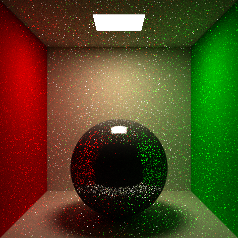
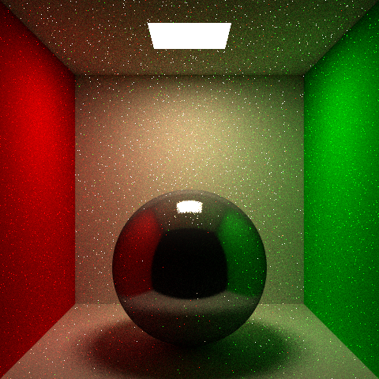
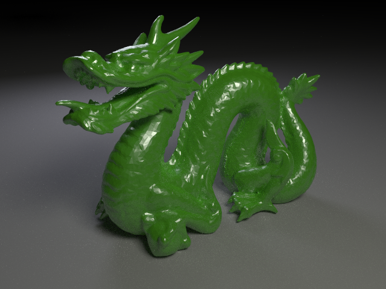
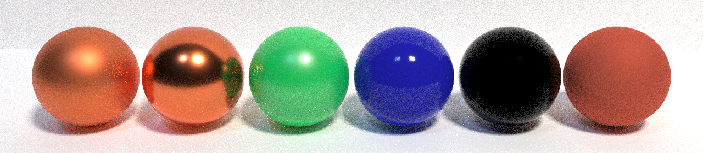
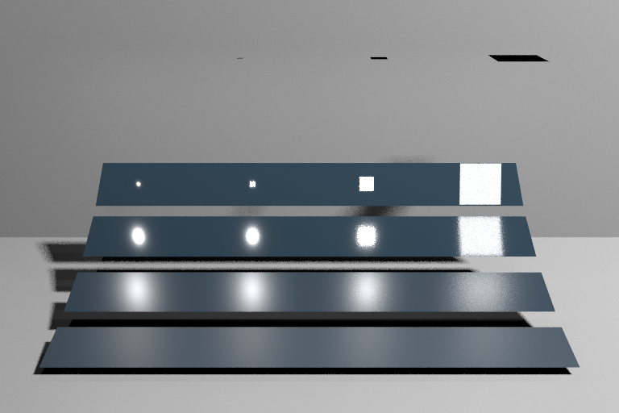
Subsurface Scattering
with Environment Map Lighting
Extended the OptiX path tracer with specular transmission, volumetric subsurface scattering, HDR image-based lighting, texture mapping, and ACES tone mapping. The hero image is the Stanford bunny as warm wax on a marble floor under a studio HDR environment with soft quad-light fills.

Starting from the assignment 4 path tracer (GGX + MIS + Russian roulette), I added four major features without replacing any existing functionality. Each objective was developed and validated with its own test scene before combining them in the hero image.
New scene commands include transmissive, subsurface,
ior, sigmat, sigmas, anisotropy,
envmap, envintensity, envrotation,
envpitch, envscaleu/v, texdiffuse,
texnormal, texrepeat, tonemap aces, and
exposure.
Source
All HDR environment maps and floor textures were downloaded from Poly Haven — a free, CC0 public-domain asset library. HDRIs from polyhaven.com/hdris; textures from polyhaven.com/textures.
Assets Used in Renders
- Studio Small 09 — hero & studio HDR
- Qwantani — outdoor sky HDR
- Brown Photostudio 02 — warm studio tests
- Marble 01 — floor diffuse + normal (1k PNG)
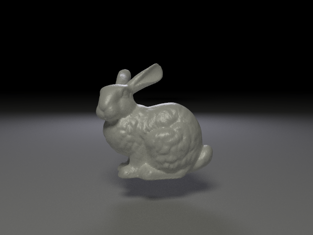
currentIOR), updated when entering or exiting transmissive geometry — sufficient for the single-shell bunny, with glass shadow rays passing through dielectric surfaces.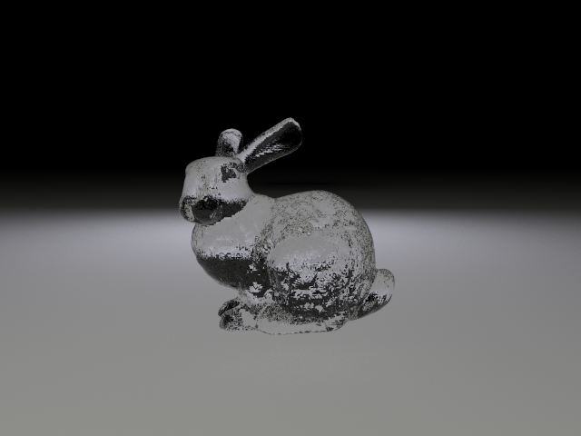
sigmat, sigmas, anisotropy, diffuse colour) control milkiness, warmth, and ear translucency.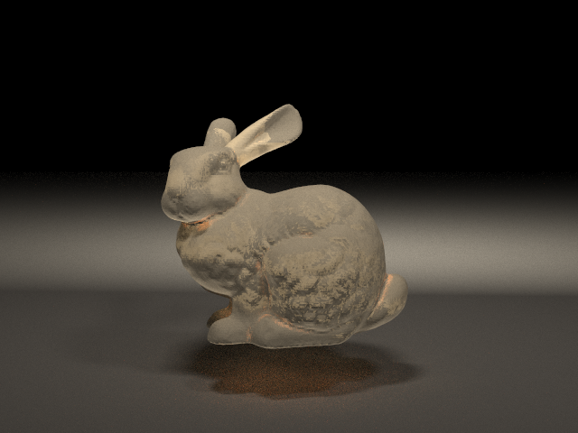
.hdr files are loaded at startup and a 2D luminance-weighted CDF is built for importance sampling bright regions of the map. Miss rays return environment radiance; at each shading point, environment NEE samples are combined with BRDF samples via the same power-heuristic MIS used in assignment 4. Uniform sphere sampling is available via envuniform on for variance comparisons.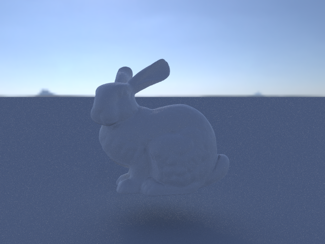
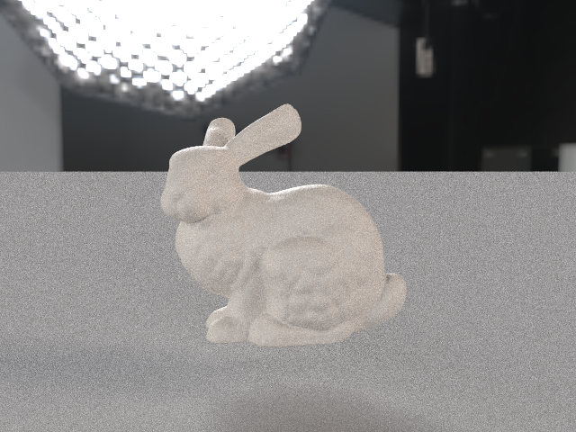
Renderer.cpp when saving the image, compressing HDR path-tracer output into displayable range without crushing shadows or blowing out the wax glow. The hero scene uses this pipeline together with the marble floor texture.
Each pair below uses identical camera, resolution, and sample count — only the varied parameter differs, as specified in the project proposal.
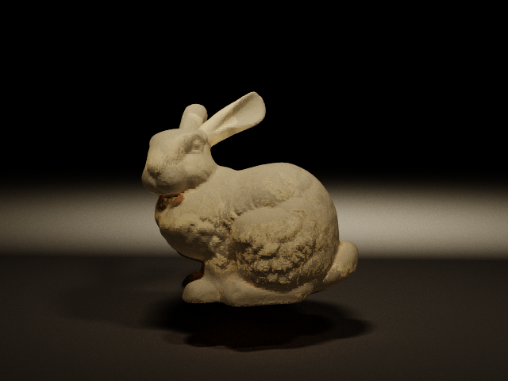
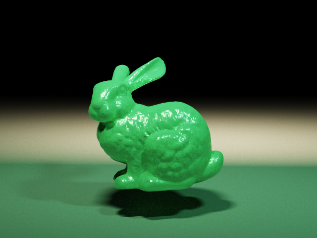
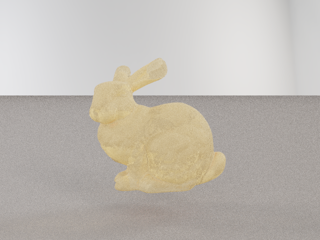
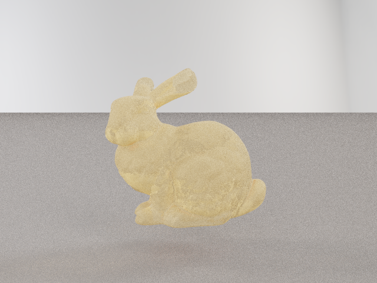
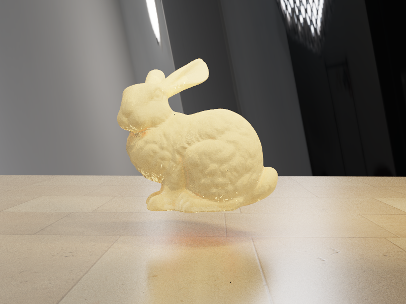
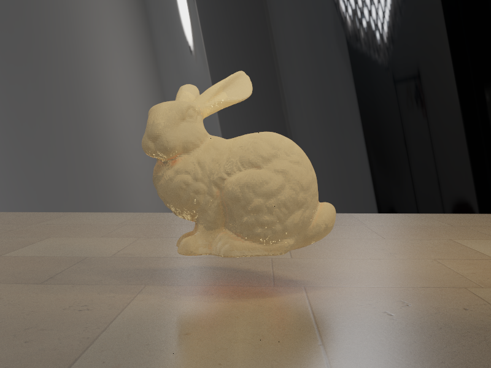
Analytic Checks
- Fresnel at normal incidence uses
((n1−n2)/(n1+n2))² - Beer-Lambert transmittance along interior segments
- Glass render confirms refraction without volume scatter
- Opaque settings converge to standard GGX + MIS result
- Env MIS uses power heuristic (β = 2), same as assignment 4
All Deliverables
- Baseline bunny —
stanford_bunny.test - Glass bunny —
stanford_bunny_glass.test - SSS bunny (quad lights) —
stanford_bunny_sss.test - SSS + outdoor HDR —
stanford_bunny_env_sss.test - SSS + studio HDR —
stanford_bunny_env_sss_is.test - Wax vs jade comparison — 1024 spp pair
- Env IS vs uniform — 512 spp pair
- ACES vs raw tonemap — 2048 spp pair
- Hero (wax + marble floor + ACES) —
stanford_bunny_hero.test